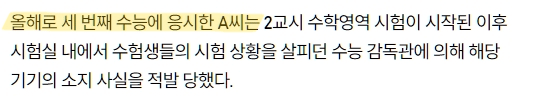
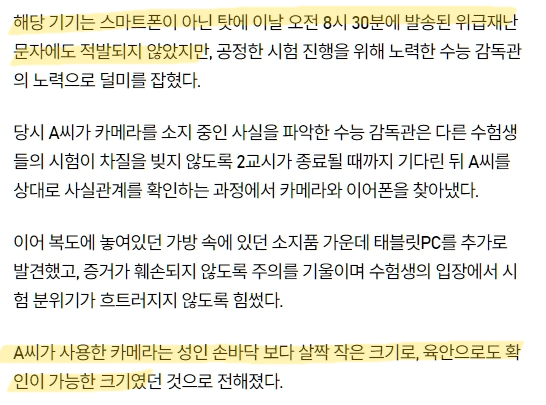
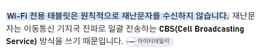
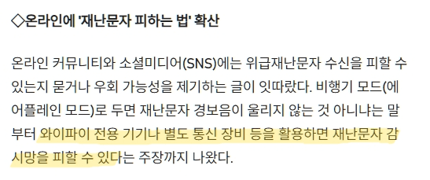
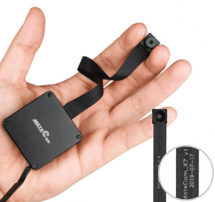
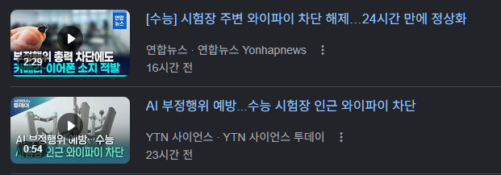
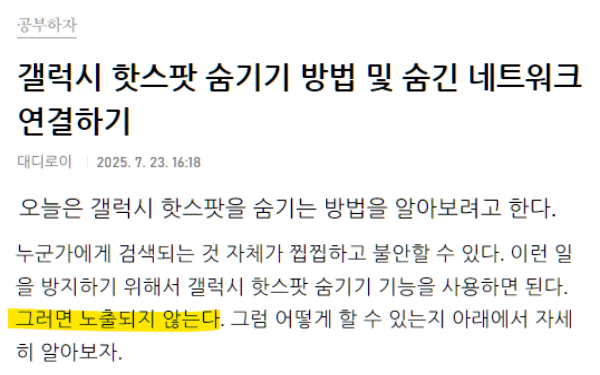
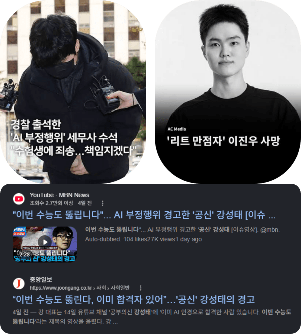

바로 어제였던 수능 당일, 경기도 용인시의 한 수험장에서
1교시 시작 전에 울리는 긴급재난문자를 무력화 시킨 삼수생이 발각됐어
이 건이 무겁게 다가오는 이유는
감독관의 재량이 부족했다면
적발되지 않고 넘어갈 수도 있었던 사례이기 때문인데

이 건에 대해 각종 보도에선 '스마트폰이 아니라서 안 울렸다' 라고 하거나
단순히 태블릿을 소지했었다고 전했어

5G/LTE 를 지원하는 태블릿들은
비행모드를 하지 않는 이상 강제로 울리기 때문에
wifi모델로 가져 온 것으로 추정돼

안타깝게도 이 방법은 '재난문자 감시망을 피하는 꼼수'로
SNS등에서 많이 공유된 방법 중 하나야. 참 아이러니하지
(ㅆㅂ)
참고로 이 삼수생이 가지고 있었던 카메라는
바닥보다 조금 작은 크기였다는 것으로 보아

뉴스에서 자주 등장한 이런 제품 이었을 것 같아
"그런데, Wifi 전용 기기면 어차피 무력화 되는 거 아니야?"
"전파를 차단하는 방법을 쓴다고 했었던 것 같은데"
언급은 됐었지만 사용할 수 없었대
이번 수능의 ai치팅이 수능을 며칠 앞두고 터진 바람에
전파 검출기(RF 탐지기)를 배치하기 어려웠고
전파를 차단해버리면 여러가지 문제가 발생하니

시험장 인근의 wifi를 끄는 것으로 타협했거든

"그래도 스마트폰으로 와이파이를 켜면
인근의 Wifi 목록이 다 나오니까
인터넷 사용을 쉽게 막을 수 있지 않아?"
그게··· 좀 어려워
스마트폰엔 핫스팟이란 기능이 있잖아
생각보다 모르는 사람들이 많은데, 핫스팟은
숨길 수 있어.


...?
그리고 이 방법은 아이폰도 사용할 수 있는 방법이라
5g나 LTE를 지원하는 모든 스마트폰만 있으면 쉽게 쓸 수 있어
*사전에 등록한 기기들만 해당 핫스팟이 보이고 연결할 수 있음
아마 덜미가 잡힌 삼수생은 이 방법을 사용했을거야
안타깝지만 아직 확실하게 막을 수 있는 방법이 나오지 않아서
2028년부터 이뤄지는 수능을 포함한 모든 국가 공인 자격증 시험에
이런 부류의 치팅을 막을 수 있는 방법이 마련되길 비는 수 밖에 없는 것 같아

(실망)

-끝-
요약)
긴급 재난문자를 무력화 하는 방법이 SNS에 공유됐고
그중 성공사례가 등장했으나 막을 수 있는 방법이 부족한 상황
댓글
수집 당시 댓글 68개
코알라코끼리 · 11.20 11:07:56
· ㅇㅇ · 11.20 11:15:58
· 코알라코끼리 · 11.20 11:18:59
· ㅇㅇ · 11.20 12:11:05
· ㅇㅇ · 11.20 19:35:06
· ㅇㅇ · 11.20 19:38:04
인천폭주딸배 · 11.20 12:01:27
ㅇㅇ · 11.20 12:01:39
· ㅇㅇ · 11.20 12:03:00
· ㅇㅁ · 11.20 12:05:35
· ㅇㅇ · 11.20 12:05:40
· 일가실각 · 11.20 12:06:22
· ㅇㅇ · 11.20 12:10:49
· ㅇㅇ · 11.20 13:33:00
· ㅇㅇ · 11.20 14:03:41
ㅇㅇ · 11.20 12:07:25
· ㅇㅇ · 11.20 12:12:19
마유미 · 11.20 12:14:14
· ㅇㅇ · 11.20 12:15:22
· 파츄맘리마통 · 11.20 12:20:50
· ㅇㅇ · 11.20 12:33:26
ㅇㅇ · 11.20 12:17:34
· ㅇㅇ · 11.20 12:18:57
· ㅇㅇ · 11.20 12:19:19
유류유우률류우류류 · 11.20 12:22:59
· 유동닉 · 11.20 17:04:35
ㅇㅇ · 11.20 12:29:00
· ㅇㅇ · 11.20 12:36:56
ㅇㅇ · 11.20 12:33:46
· apachekid · 11.20 12:42:31
밋아 · 11.20 12:38:38
apachekid · 11.20 12:40:08
ㅇㅇ · 11.20 12:52:50
ㅇㅇ · 11.20 13:00:23
ㅇㅇ · 11.20 17:26:16
· ㅇㅇ · 11.20 17:27:29
봇치쟝 · 11.20 19:31:23
かなたん · 11.20 19:32:01
· 샨테 · 11.20 19:32:18
· ruide · 11.20 19:35:31
샨테 · 11.20 19:32:07
· かなたん · 11.20 19:33:40
· ruide · 11.20 19:35:14
ㅇㅇ · 11.20 19:33:01
ㅇㅇ · 11.20 19:33:19
ㅇㅇ · 11.20 19:33:21
DC전사쿠루미쨩 · 11.20 19:33:39
· ㅇㅇ · 11.20 19:34:43
ㅇㅇ · 11.20 19:33:51
ruide · 11.20 19:34:52
· 샨테 · 11.20 19:35:48
· ㅇㅇ · 11.20 19:35:50
· ㅇㅇ · 11.20 19:36:11
· かなたん · 11.20 19:37:34
ㅇㅇ · 11.20 19:35:22
ㅇㅇ · 11.20 19:35:36
ㅇㅇ · 11.20 19:36:19
ㅇㅇ · 11.20 19:37:09
ㅇㅇ · 11.20 19:37:41
ㅇㅇ · 11.20 19:39:48
· ㅇㅇ · 11.20 19:40:04
ㅇㅇ · 11.20 19:40:54
ㅇㅇ · 11.20 19:41:44
ㅇㅇ · 11.20 19:43:28
ㅇㅇ · 11.20 19:43:56
ㅇㅇ · 11.20 19:45:04
ㅇㅇ · 11.20 19:52:10
폴렌 · 11.20 19:54:33